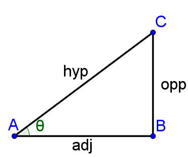
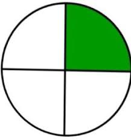
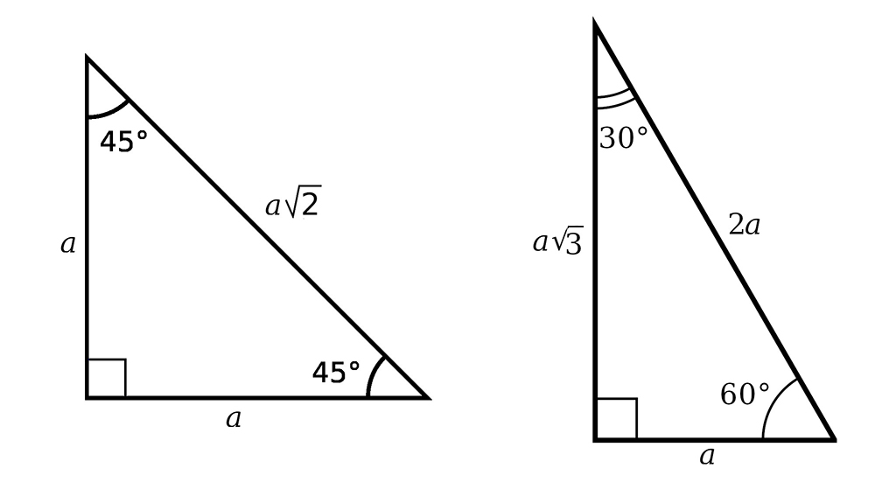

Trigonometry Basics
Angles
- An angle is the space made between two planes or lines
- The general symbol for an angle is $θ$
- The units for an angle is either degrees ($°$) or radians (rad)
> Note: When using radians as the unit, "rad" is usually omitted
> Most programming languages & intermediate/advanced math courses use radians as the default unit for calculations
> It just so happens that $π = 180°$ is true ($π$ here is in radians; the actual value for $π$ isn't actually too important, think of $π$ as though it's a variable that is assigned a certain value)
- Different shapes have certain amount of angles that always add up to a specific angular sum depending on the number of sides
> For instance, the sum of all three angles in a triangle always adds up to $θ = 180°$ or $θ = π$
> Another important example is a circle where the angular sum from the center of a circle always adds up to $θ = 360°$ or $θ = 2π$
Right Triangles
- A right triangle is a triangle that contains one right angle, where $θ = 90°$ or $θ = \frac{π}{2}$

- There are three sides to a triangle relative to the angle $θ$: one opposite side, one adjacent side & one hypotenuse side
- The hypotenuse side of a right triangle is always larger than the other two sides
> It just so happens that the sum of the two squares of the opposite & adjacent side lengths ($L_o$ & $L_a$ respectively) equals to the square of the hypotenuse length ($L_h$), in other words:
- $L_o^2 + L_a^2 = L_h^2$
- $a^2 + b^2 = c^2$
~ This is how it is most commonly written as; The Pythagoream Theorem
~ This is a very useful formula because it allows us to find the length of any side of a right triangle given the length of two sides
~ The length of the hypotenuse can be solved by rearranging the Pythagoream Theorem:
- $c^2 = \sqrt{a^2 + b^2}$
~ Or the length of any other side besides the hypotenuse can be solved by:
- $a^2 = \sqrt{c^2 - b^2}$
- The length of any side of a right triangle can also be solved using the length of another side & one angle
This is where trigonmetry comes in..
Trigonometry
- Sine or cosine functions (sinusoidal functions or trigonometric functions) are used to solve for an angle or length of a right triangle
> It's also worth noting that a circle forms four interior right triangles

- The sine function takes an input of an angle and outputs the ratio of the opposite length & the hypotenuse length:
> $sin(θ) = \frac{L_o}{L_h}$
- The cosine function takes an input of an angle and outputs the ratio of the adjacent length & the hypotenuse length:
> $cos(θ) = \frac{L_a}{L_h}$
- The tangent function is the ratio of the sine function & cosine function:
> $tan(θ) = \frac{sin(θ)}{cos(θ)}$
> $tan(θ) = \frac{L_o}{L_a}$
- The length of any one side and a given angle can therefore be used to solve for any other side by rearranging these trigonometric functions
- In the case where two sides of a right triangle are given and the angle is unknown, the angle can be solved by rearranging the trig functions in a different way
- To "cancel out" a trig function, its inverse or arc would have to be used
- For instance, to solve for an angle given the opposite length & hypotenuse length, the inverse-sine or arc-sine functions are used:
> $θ = sin^-(\frac{L_o}{L_h})$
> $θ = asin(\frac{L_o}{L_h})$
- The inverse of any trig function can be used in this way to solve for an unknown angle
- Other less common trig functions include the secant (from sine), cosecant (from cosine), & cotangent (from tangent) functions
These functions are simply the inverse of their respective lengths:
- The secant function is the inverse of sine (not to be confused with sine-inverse):
~ $sec(θ) = \frac{1}{sin(θ)}$
~ $sec(θ) = \frac{L_h}{L_o}$
- The cosecant function is the inverse of cosine:
~ $csc(θ) = \frac{1}{cos(θ)}$
~ $csc(θ) = \frac{L_h}{L_a}$
- The cotangent function is the inverse of tangent:
~ $cot(θ) = \frac{1}{tan(θ)}$
~ $cot(θ) = \frac{cos(θ)}{sin(θ)}$
~ $cot(θ) = \frac{L_a}{L_o}$
Special Right Triangles
- For simplicity, radians will be used instead of degrees
- There are certain lengths & angles of a right triangle that are always constant
- An important one is where the opposite & adjacent lengths are both equal to $1$
> For this case, the hypotenuse is always equal to $\sqrt{2}$ & either angle is always equal to $\frac{π}{4}$ or $45°$:
- if($L_o == 1$ && $L_a == 1$) {$L_h = \sqrt{2}$; $θ = \frac{π}{4}$}

- Another important special right triangle is where the opposite length is equal to $1$ and the adjacent length is equal to $\sqrt{3}$
> For this case, the hypotenuse is always equal to $2$ & the angle is always equal to $\frac{π}{6}$ or $30°$:
- if($L_o == 1$ && $L_a == \sqrt{3}$) {$L_h = 2$; $θ = \frac{π}{6}$}
> The opposite & adjacent lengths can also be reversed so that the relative angle is equal to $\frac{π}{3}$ or $60°$:
- if($L_o == \sqrt{3}$ && $L_a == 1$) {$L_h = 2$; $θ = \frac{π}{3}$}
- The lengths of these special right triangles can also be scaled to any value
> However, the angles & the ratio beween the lengths will always remain the same
- Try inputting any angle in radians (in terms of $π$) into a calculator and see the result!
- This result is really just the ratio of lengths according to which trig function you use
- Test out the angles from the special right triangles and see how the ratio of lengths match!